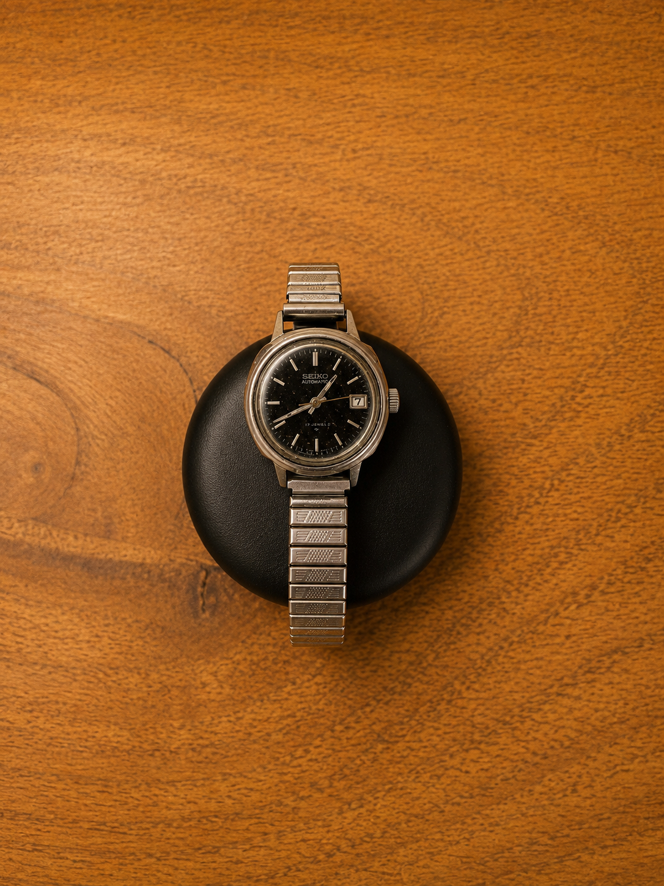
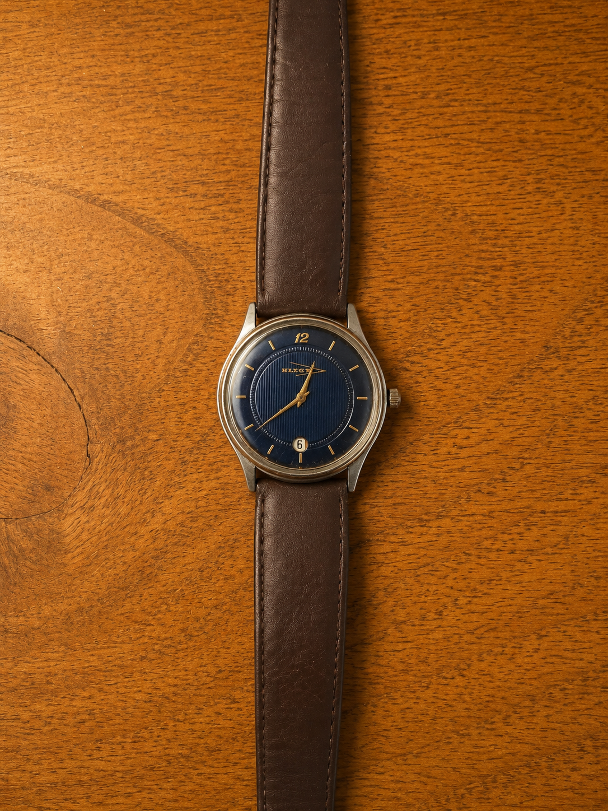
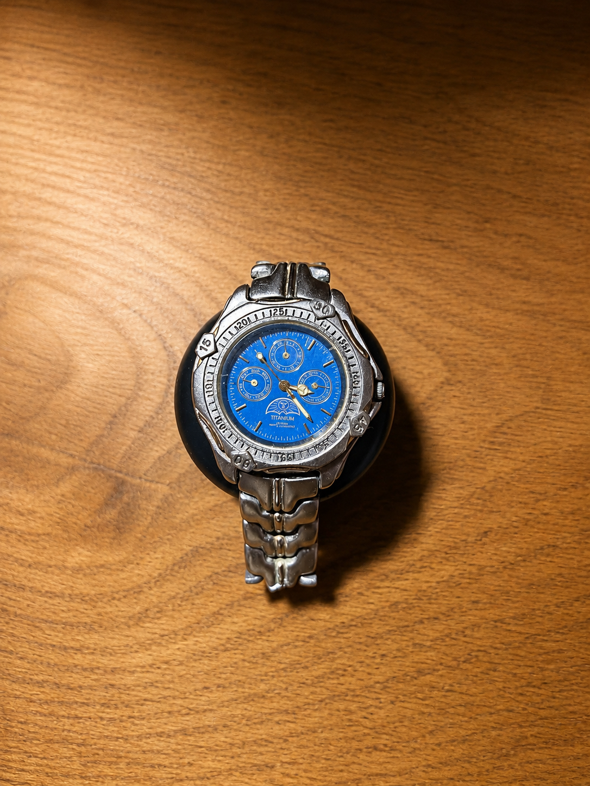
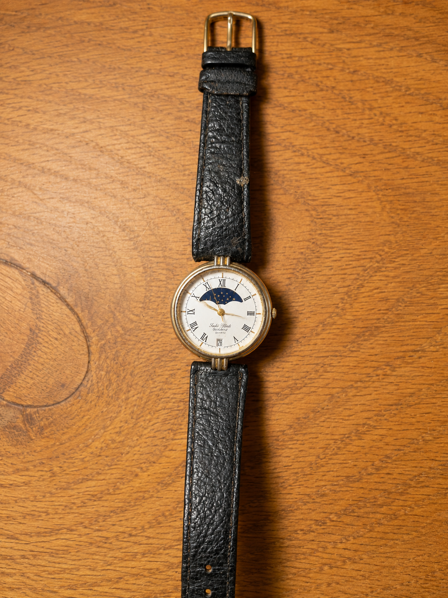
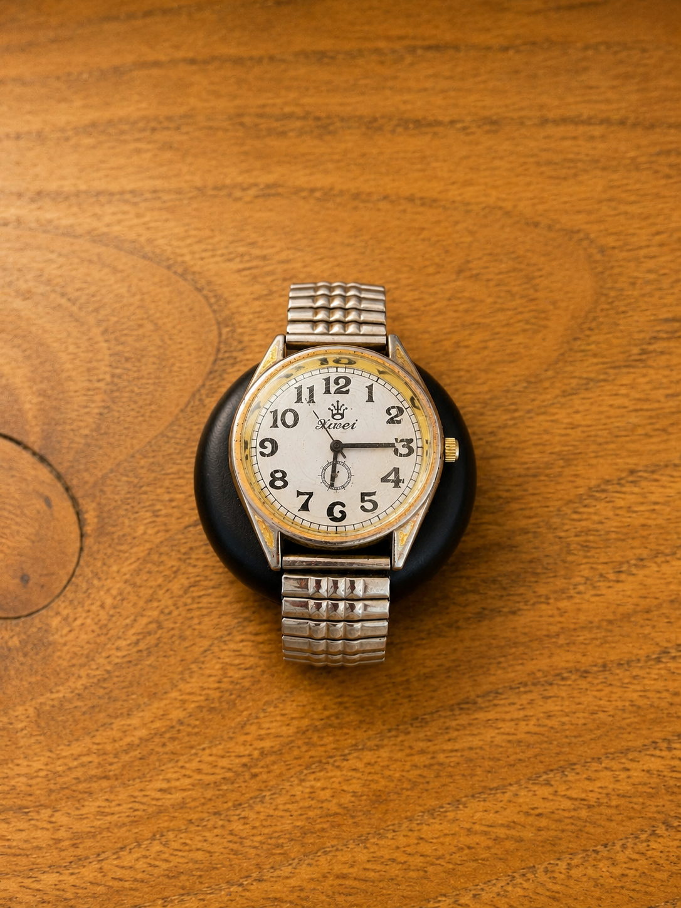
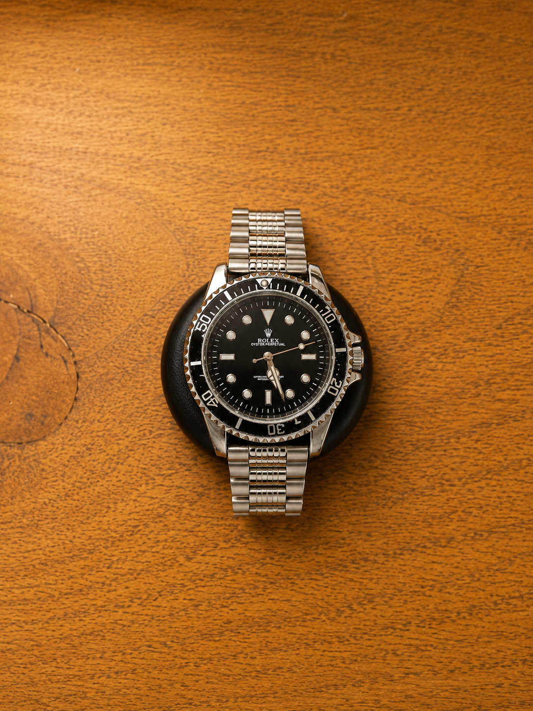

RELOJES VINTAGE & SERVICIO RELOJERO
RELOJES VINTAGE & SERVICIO RELOJERO

Selección de relojes vintage, cambio de pilas, correas y servicio relojero en Osorno.
Contactar por WhatsAppSelección de piezas vintage y clásicas.
Servicio rápido para relojes quartz.
Correas de cuero, acero y silicona.
Síguenos para ver nuevos relojes vintage, restauraciones y novedades.
@australdial
Clásico Seiko automático vintage con elegante dial negro, calendario y brazalete extensible de acero. Diseño sobrio y atemporal ideal para uso diario o colección. Funcionando.
$59.990
Consultar
Reloj vintage de diseño minimalista con elegante dial azul texturizado, detalles dorados y correa de cuero café. Pieza clásica con mucha presencia y estética retro sofisticada. Funcionando
$24.990
Consultar
Reloj estilo deportivo vintage con caja titanium, dial azul eléctrico y diseño cronógrafo. Brazalete metálico robusto y estética noventera. Funcionando.
$19.990
Consultar
Reloj clásico estilo moonphase con dial blanco, numeración romana y detalle de sol/luna. Caja dorada y requiere cambio de correa. Funcionando.
$24.990
Consultar
Reloj vintage de estética retro con números arábigos grandes, segundero pequeño y detalles dorados envejecidos. Diseño clásico con mucha personalidad y presencia vintage auténtica. Funcionando.
$21.990
Consultar
Diseño clásico inspirado en relojes submarineros icónicos, con presencia deportiva y elegante. Funcionando.
$10.000
ConsultarEn Austral Dial seleccionamos relojes vintage y clásicos de distintas épocas, incluyendo modelos Citizen, Seiko, Orient y otras marcas reconocidas, junto a piezas menos conocidas con estética auténtica y carácter vintage. Nos enfocamos en relojes en buen estado, funcionando y cuidadosamente elegidos por su diseño, historia y presencia